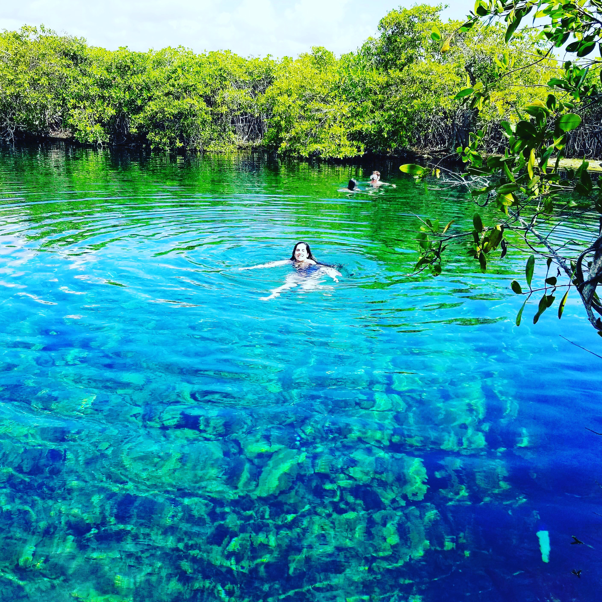
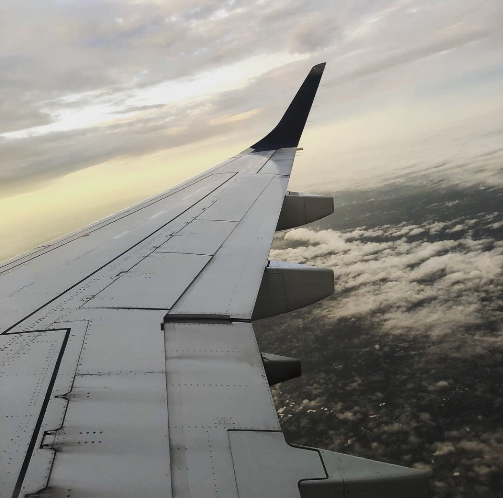
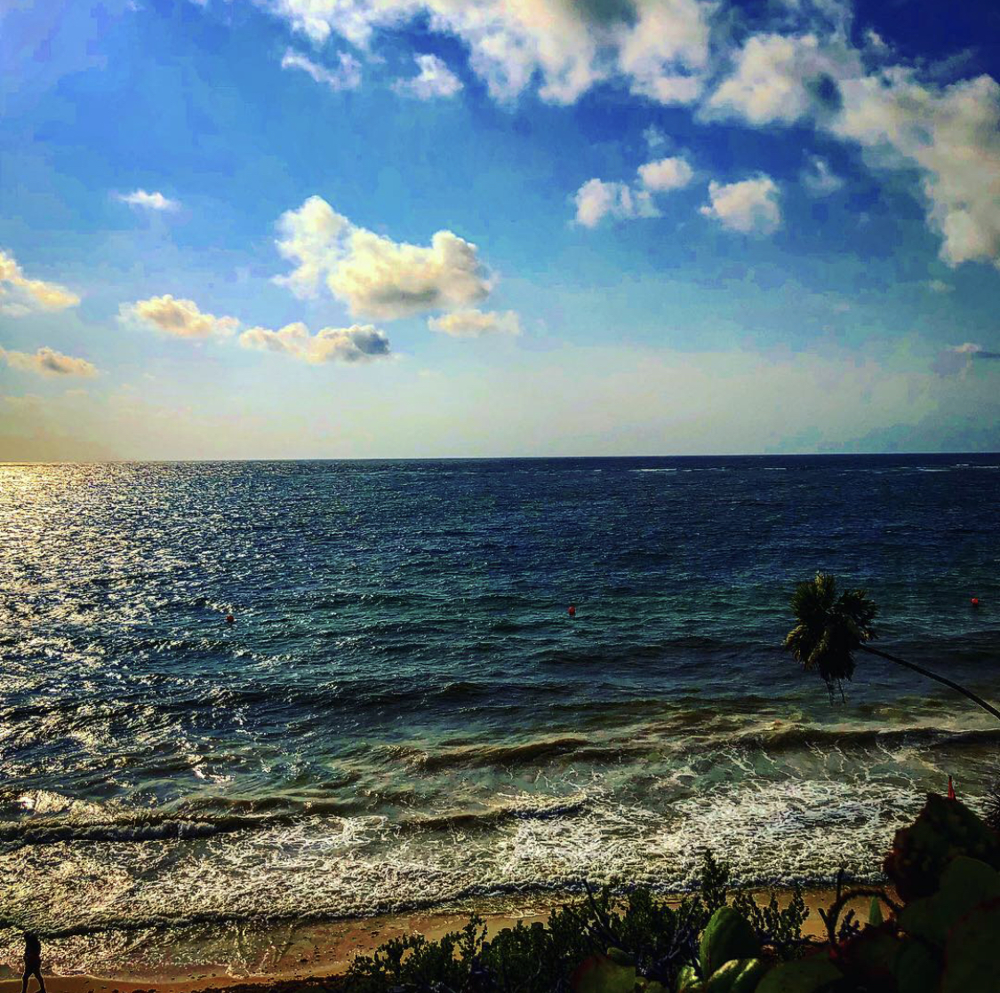

Yasmine's Travels
Come to learn, explore, and discover a world beyond your front door! Whether you’re here to make a leap into the avid traveler lifestyle, looking for ways to sharpened up your current travel skills, or in need of a good word of advice for a one-off trip. Take a look around! Hopefully, you find what you’ve been searching for or feel free to lend me some advice from your personal journey.



What to know more about me and why I choose to start this site? Feel free to browse my About Page!

It’s always helpful to pick up some tips and tricks before setting off to navigating a new city abroad or enjoying a weekend trip down the road.
About
As you may have guess, I am Yasmine and this site is all about my travel journey, the good, the bad, and the funny! Home base is the gorgeous Appalachian Mountains of North Carolina. Currently, I am fully employed as a Copywriter for an e-commerce site and do some freelance copywriting and marketing email and post for another e-commerce site. My life revolves around work, so getting away for a vacation or trip is big deal. Somehow I make it all work! Life motto: Balance is the key to lasting happiness and keeping yourself sane between deadlines. Without going deep into my personal life, let me tell you about what this space/blog is all about.
Every single person in this world is different. From which foods we prefer to the time of day we wake up to how we enjoy music or TV and basically everything in between that defines our society and way of life. For most of us, searching this planet for the best sights, tastiest delights, friendliest companions, and passionate experiences are found through travel. How we choose to travel, when, where, and so forth continue to separate us, but the common desire for wanderlust will always ties us together.
I am not here to tell you that traveling will help you discover your true self or make a lasting positive effect on your outlook. It could totally happen! And, for people out there, that’s just what traveling has accomplished. Instead, I want to provide support, knowledge, and encourage to those that seek adventure filled with gorgeous moments and breathtaking views. The greatest hits and memorable encounters that come with the joys of visiting a new place or stepping out of your comfort zone.
So what is this site all about? Helping guide those lost on where to begin, confused by all the information floating around, and looking to escape or inhale a breath of fresh air. You could be new to the concept of traveling alone or an expert looking for new tips, either way and everything in between, this space and information is for you. If you are an expert or have knowledge under your belt, please feel free to spread your wisdom to all of us. Although we are different, none of us are perfect.
As I continue to build and learn, hopefully this space will be filled with everything you need to know or at least a beginners guide for your style of traveling. To travel is to plan! And planning is what I do best. Don’t want you to get the wrong impression, I don’t plan down to the every minute of every day, that would drive me crazy! Traveling is an opportunity to relax and free oneself from the routine of every day life. Instead, booking flights, researching places to stay, and getting an idea on possible outing, tours and sight. It’s great to walk into your trip with an expectation of what it will be like, not an itinerary written in stone. Since the weather can change in the snap of a finger, a natural disaster is right about every corner, and then life just happens! Leaving room for error or changes is the best policy.
Now that we’ve gotten to know each other, what would you like to take away from this site? Tips & Tricks for getting the most out for your vacation or traveling pursuits? Maybe a little inspiration from my past and future Trips? Or, perhaps you would like to ask a question or lighten me with some advice? Then check out my Contact info!
Hope you find what you are looking for!
Contact
Feel free to reach out to me or follow my journy on Instagram or Twiiter
Email: yasminestravels@gmail.com
Twitter: @yasminestravel
Instagram: @yasminestravels
Facebook: